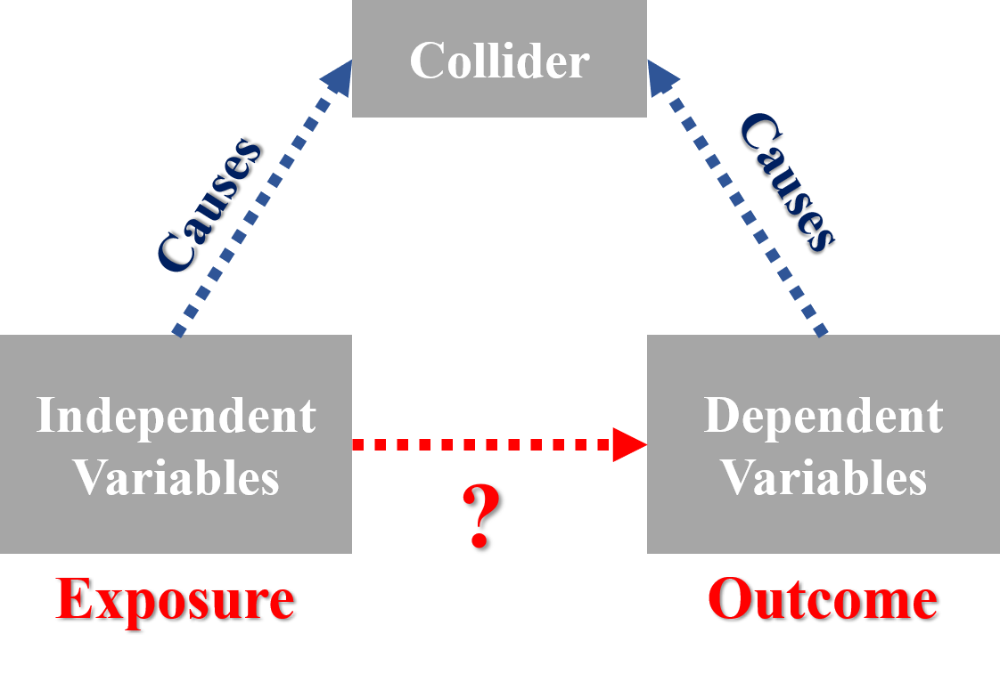

Exercise 3 Collider Bias
Collider bias is used to describe the variable which is simultaneously influenced by the independent variable and the dependent variable in the model formulation. Though the causal variables influencing the collider are themselves not necessarily associated, that is, the dependent variable and the independent variable of the model have no casual effect, the spurious relationship is found under the intervention of collider variable. The casual graph of collider bias is shown in Figure .

(#fig:casual_graph)Casual graph of collider bias